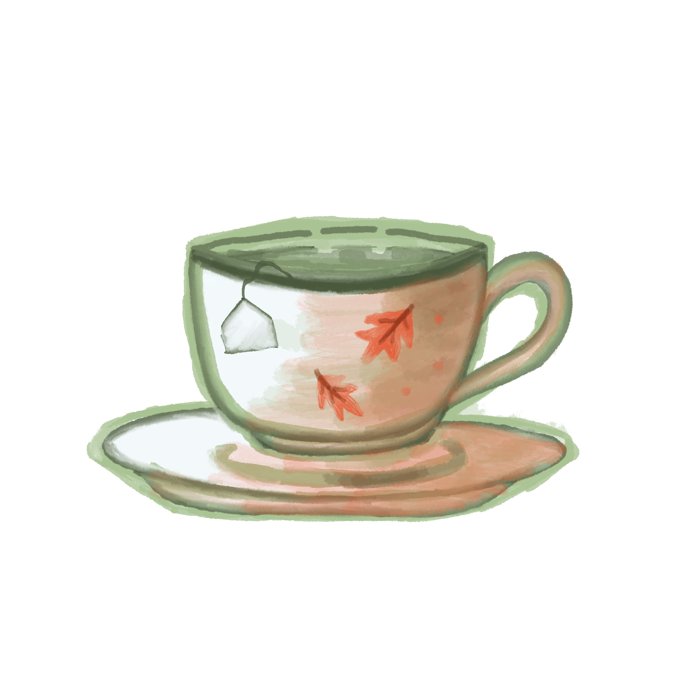

Teas of the Seasons
As each season comes and goes, tea is the one constant
that keeps me energized in the morning is a nice big
cup of green tea. Throughout the year I use my
seasonal tea cup, sometimes served cold, sometimes
served hot, with each season bringing a unique
opportunity to try new tea combinations!
Below are a few of my favorites..
The best way to start off any cold or gray winter morning
is a cup of steaming hot green tea. For a hint of spice around
the holidays, I add a dash of ginger and ground cinnammon.
As a treat, sometimes I enjoy a crumbly cookie on the side,
or dunk it into my tea!
As the weather begins to warm and the rain showers bring
us lots of fresh fruit, spring is a great time to try new green
tea recipes! For a tart and energizing drink, I like to add a
tablespoon of fresh squeezed lemon and some washed and
newly picked blackberries!
When the days start to get longer and the mornings
get hotter, freshening up with a cool iced green tea
is the perfect morning starter. I like to pick fresh
strawberries from my plants and put frozen berries
in my tea. Sometimes I even add mint leaves from
my grandmothers garden for a fresh taste!

Crisp fall mornings signal the end of fall and the best
time to try new cozy green tea recipes! I add honey for
a little sweetness, some ground cinnamon and a dash of
pumpkin pie spice for a warm spiced morning tea! You can
add you prefered milk and even some whipped cream on
top if you want an extra cozy morning treat!